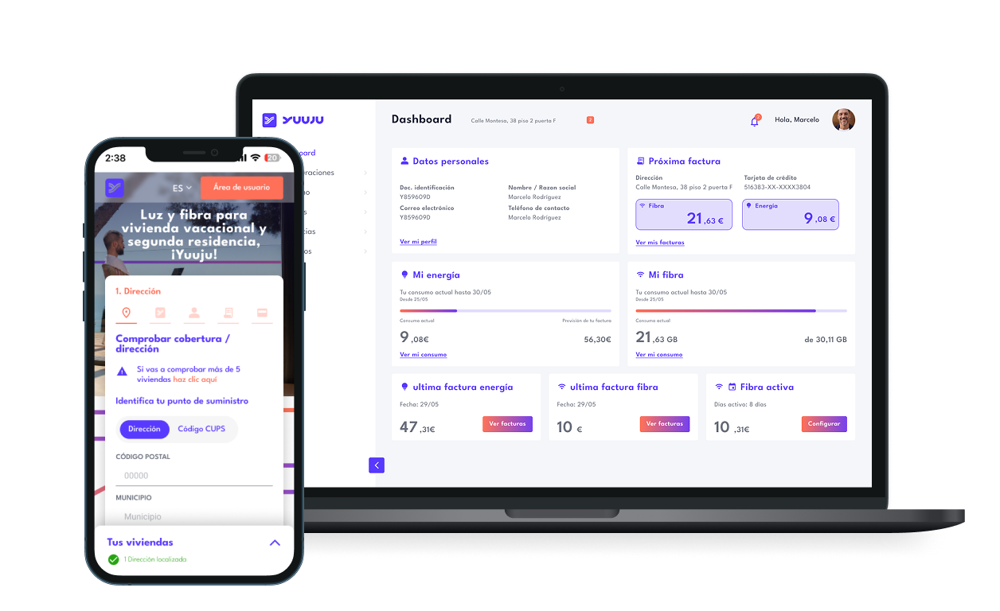
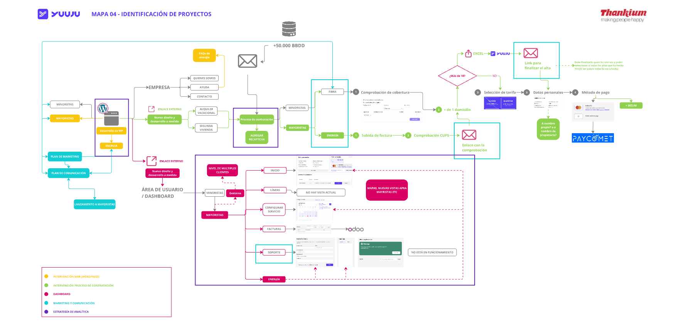
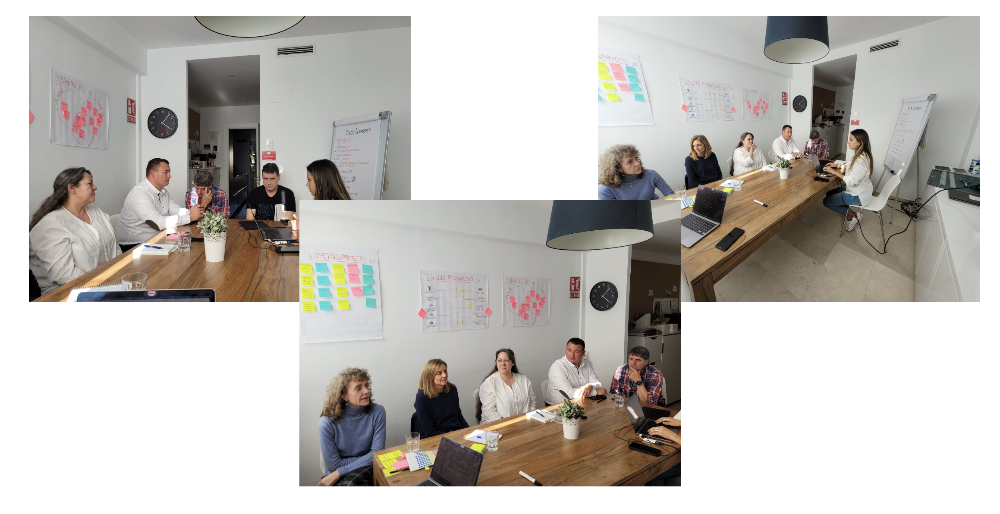
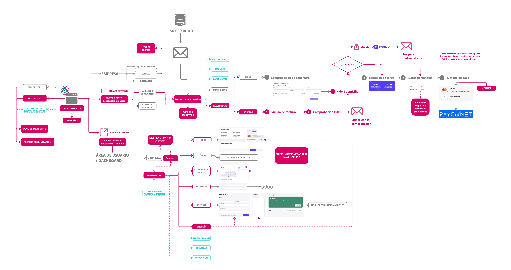
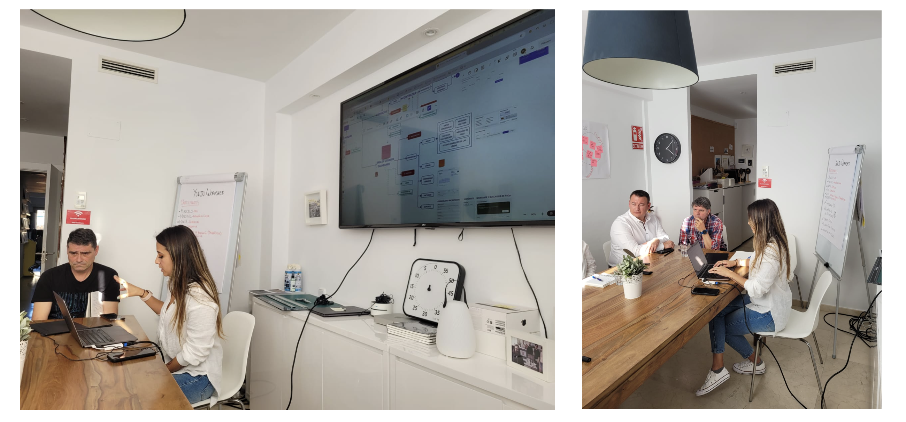
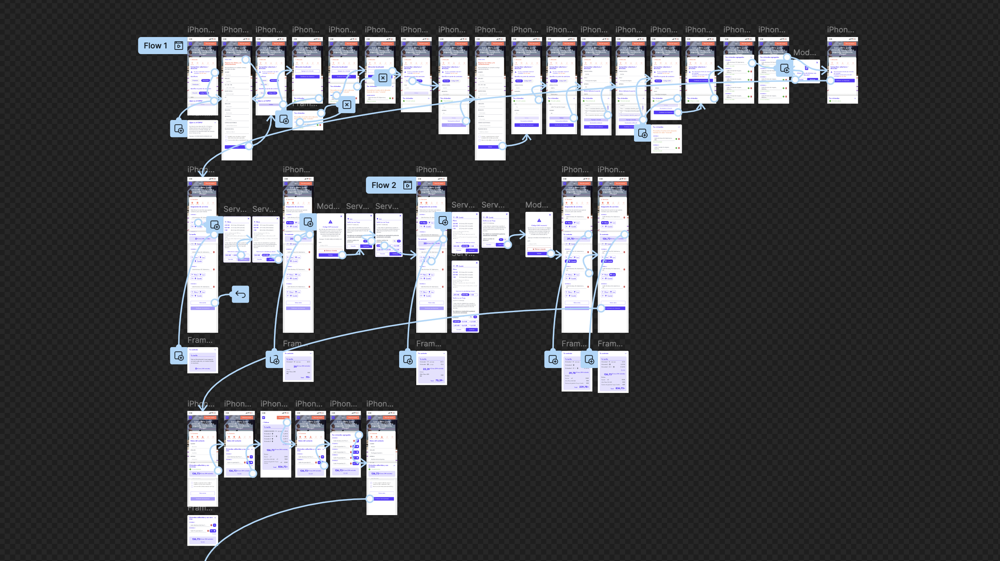
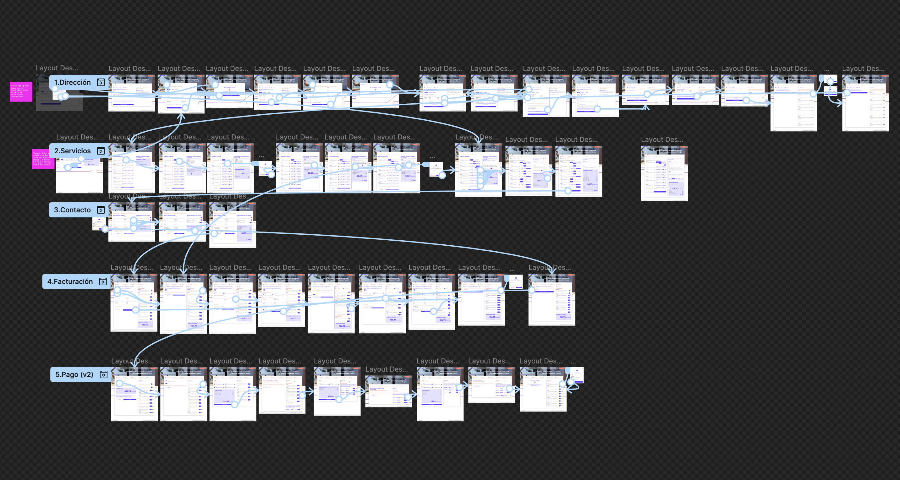
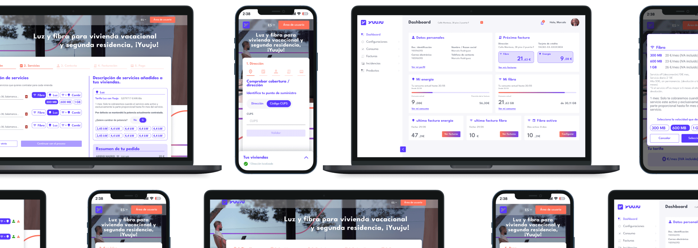

01 — Challenge
The Challenge
YUUJU offers internet and electricity subscriptions for holiday homes across Spain. The platform needed to handle three distinct user types — individuals, businesses, and freelancers — each with completely different contracting needs, all within a single coherent experience.

Users could manage up to 10 properties simultaneously, requiring a complex CRM with real-time consumption dashboards, multi-payment support, address verification, and DNI validation — all while feeling simple and approachable.


02 — Requirements
Key Project Requirements

- Dynamic multi-service contracting system (internet + electricity)
- Address and DNI online verification with real-time validation
- Scalable architecture supporting up to 10 simultaneous properties
- Custom portals for B2C, B2B, and freelancer user types
- Intuitive UX despite the underlying complexity
- Comprehensive CRM with real-time consumption dashboards
03 — Process
My UX Process
Discovery Workshop
Mapped all user types, contracting scenarios, and legal requirements through structured stakeholder workshops.
Strategic Planning
Defined the platform architecture: shared foundations + differentiated portals per user type with common design language.
Custom UI/UX Design
Designed all portals, dashboards, and contracting flows. Established a design system with component variants for each user context.
Automated Validation Design
Designed the address lookup, DNI verification, and electronic signature flows with clear feedback states.
Complex Form UX
Structured the multi-step contracting form to feel simple despite handling highly variable data inputs.
Scalable Infrastructure Design
Designed for future service expansion — the system was built to add new utility types without restructuring.



04 — Results
Results and Deliverables
- Complete multi-service contracting system live and operational
- Full CRM with real-time dashboards for property management
- Automated address, DNI, and coverage verifications
- Multi-payment gateway and electronic signature integrated
- Future-proof platform ready for new utility types
- Full digital ecosystem delivered — portals, CRM, automations
